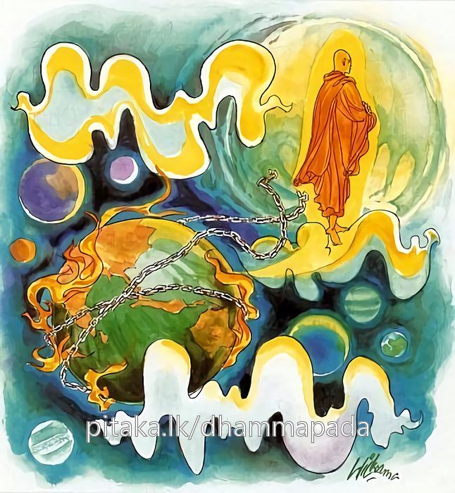

7-1 පළමුවන ජීවකප්රශ්න වස්තුවයි.
මෙම කතාව සද්ධර්ම සාගරයෙන් ද කියවන්න.
ගතද්ධිනො විසොකස්ස විප්පමුත්තස්ස සබ්බධි
සබ්බගන්ථප්පහීණස්ස පරිළාහො න විජ්ජති.
සසර කතරමග ඉක්ම, පහ වූ ශෝක ඇති, (ස්කන්ධාදී) සියලු දහම්හි නො ඇලී එයින් මිදුනු, (අභිජ්ඣාකායගන්ථාදී) සියලු ග්රන්ථ ප්රහීණ කළ රහත්හට චෛතසික පරිදාහයෙක් නැත්තේ ය.

ගත්ද්ධිනො ආදි මේ ධර්මදේශනාව බුදුරදුන් දෙව්රම වාසයකරනකාලයේ ජීවකයන් ඇසූ ප්රශ්නයක් අරභයා දේශනා කරනලද්දකි. ජීවකවස්තුව විනය ඛන්ධකයෙහි විස්තර වශයෙන් දැක්වේ. එක් සමයෙක දෙව්දත්තෙම අජාසත්රජු සමග එක්වී ගිජුකුළුපව්වට නැගී දූෂණය කරගත් සිතින් බුදුන් මරාදමන්නෙමියි ගලක් පෙරළීය. ඒ ගල පර්වත මුදුන් දෙකක් විසින් පිළිගන්නාලදි. එයින් බිඳී විසිවුණු පගල්පතුරක් බුදුන්ගේ පාදයේ ඇනී ලේ පිටවිය. ක්රෑර වේදනාවක් ඇතිවිය. භික්ෂූහු බුදුන් මද්දකුච්ඡි නම් තැනට පැමිණවූහ. බුදුරජාණන්වහන්සේ එතැනින් ජීවකඅඹවනයට යනු කැමැත්තෙන් මා එහි ගෙනයව්යයි කීහ. භික්ෂූහු භාග්යවතුන්වහන්සේ රැගෙන ජීවක අඹවනයට ගියාහුය.
ජීවක වෛද්යවරයා එපුවත අසා ශාස්තෘන්වහන්සේ සමීපයට ගොස් තුවාලයට ප්රතිකර්ම සඳහා තියුණු බෙහෙතක් සාදා එය තබා බැඳ බුදුරදුන් මෙසේ දන්වා සිටියේය. ස්වාමීනි, මම ඇතුළු නගරයේ එක් මිනිසෙකුට බෙහෙත් කරමින් සිටියෙමි. නැවත ඔහු ළඟට ගොස් එන්නෙමි. මේ බෙහෙත මා එනතුරු බැඳි ආකාරයෙන්ම තිබියයුතුයයි කියා ගියේය. ඔහු ගොස් අනිත් රෝගියාට කළයුතු වෙදකම් කොට දොරවල් වසන වේලාවෙහි එන්නේ දොරවල් වසන්ටපෙර පැමිණිය නොහැකිවිය.
ඉන්පසු ඔහුට මෙබඳු සිතක් ඇතිවිය. අනේ මා අතින් නපුරු දෙයක් සිදුවිය. අනිත් රෝගීන්ට මෙන් බුදුන්ගේ පාදයෙහිත් ලේ පිළිස්සෙන කටුක බෙහෙතක් තබා බැන්දෙමි. දැන් ඒ බෙහෙත ඉවත්කරන වේලාවයි. එය දැන් ඉවත් නොකොළොත් මුළු රෑ පුරා බුදුන්ගේ සිරුරෙහි දැවිල්ල හටගන්නේය. ඒ වේලාවෙහි ශාස්තෘන්වහන්සේ ආනන්ද හිමියන්ට කථා කොට, ආනන්ද, සවස්වී ආ ජීවකයන්ට දොරවල් වැසීමට පෙරාතුව ආගත නොහැකි විය. දැන් තුවාලයේ බෙහෙත ඉවත් කරන වේලාවයයි ඔහු සිතීය. එහෙයින් එය මුදාලන්නැයි වදාළහ. තෙරණුවෝත් එය මුදාහළහ. තුවාලය ගසක මැලියමක් ගැළවුණාක් මෙන් පහවී ගොස් තිබිණි. ජීවකතෙම අරුණ නැගෙන වේලාවෙහි බුදුන් සමීපයට වේගයෙන් අවුත් ස්වාමීනි, කෙසේද ඔබ වහන්සේගේ ශරීරයෙහි දැවිල්ල හටගත්තේදැයි විචාළේය. ශාස්තෘන්වහන්සේ, ජීවකයෙනි, තථාගතයන්ට බෝධිමණ්ඩයෙහිදීම සියලු දැවිලිවේදනා නිවීගියේයයි පූර්වාපරසන්ධි ගළපා දහම් දෙසමින් මේ ගාථාව වදාළහ:
සසර ගමන් කෙළවර කොට
සැම සෝදුක්වලින් මිදුණ
සියලු ගැටලු මුදා දැමූ
අයට වේදනා නොම වේ
එහි ගතද්ධිනො යනු මාර්ගයට පැමිණි, කාන්තාර මාර්ගය, සංසාරවට්ට මාර්ගය වශයෙන් අතරමාර්ග දෙකකි. එයින් කාන්තාරයට පැමිණි පුද්ගලයා යම් විටක තමන් කැමති ස්ථානයට නොපැමිණෙන්නේද එතෙක් ඔහු මගියෙක්ම වේ. ඒ ස්ථනයට පැමිණිවිට ඔහු ගතද්ධිමාර්ගය අවසන් කළ පුද්ගලයෙක් වෙයි. සංසාරවට්ටයෙහි ඇවිදින සත්ත්වයෝද සසර වසනාතාක් කල් මගියෝම වෙති. කුමක් නිසාද? සංසාරවර්ටය අත්නොහැරි හෙයිනි. සෝවාන් ආදීහුද මගියෝමය. සංසාර පැවැත්ම ප සෙකට දැමූ රහතන්වහන්සේ වූකලි ගතද්ධි හෙවත් සසරගමන් කෙළවර කළහෙයින් ගතද්ධි යන නම ලබති. විසොකස්ස යනු සසර පැවැත්ම මුල්කොට ඇති ශෝකවලින් බැහැරවූ හෙයින් ශෝක නැත්තෙකු වෙයි. සබ්බධි-සියලු ස්කන්ධාදි ධර්මයන් කෙරෙහි, විප්පමුත්තස්ස සිව්වැදෑරුම් ග්රන්ථ (ගැටලු) ප්රහීණ කළ හෙයින් සබ්බගන්ථප්පහීණස්ස යනුවේ. පරිළාහො න විජ්ජති දැවීම් දෙකකි. කායික චේතසික වශයෙනි. එයින් රහතන් වහන්සේට ශීත උෂ්ණාදි වශයෙන් උපදින කායික දැවීම් නිවුණේ නැත. ඒ නිසයි ජීවක බුදුන්ගෙන් අසා සිටියේ. ශාස්තෘන්වහන්සේ ධර්මරාජයන් බැවිනුත් දේශනාවිධි පිළිබඳ කුශලත්වයක් ඇති බැවිනුත් කායික චේතසික දැවීම් වශයෙන් දේශනාව පවත්වමින්, ඇවැත් ජීවකයෙනි, පරමාර්ථ වශයෙන් නම් මෙබඳු ක්ෂීණාශ්රව කෙනෙකුන්ට දැවීම් නැත්තේයයි වදාළහ.
දේශනා කෙළවර බොහෝදෙනා සෝවාන්ඵලාදියට පැමිණියාහුය.